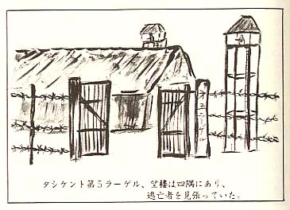

|
 第五ラーゲル所長は、「マルチンスキー」 と云う若い中尉だった。スラブ系人種で、赤 茶黄の頭髪、青い瞳、背丈は中位の気真目な 顔をした中尉だった。何となく如才ない男だ ったが、愛想など見せなかった。 我らの部隊長は、山崎少佐で副官は鶴田大 尉だった。 マルチンスキー所長は、翌朝隊長を呼んで、 これからの作業割当を指示し、作業定量、ノ ルマを説明し、何事もソ連側の指示命令に従 って、ノルマを遂行するよう迫ったようだっ た。 通訳を担当するのは、日本語とロシア語に 達者な朝鮮人だった。 私は翌日から収容所近くにある綿工場内の 道路側溝掘り土方隊長を命ぜられた。隊員は 三〇人だった。 道路側溝掘りは、延長三百米から五百米も ある長さの溝掘りである。十人づつの三班に 分かれて、巾一・五米深さ二米の溝掘り作業 だった。 ソ連の現場監督者（ナチャイニック）の説 明によると、一人一日の排土量のノルマは、 五立米と云う。 実際に溝掘り作業をして見ると、一人二立 米が精一杯だった。今の給食量では一立米位 が最大だろう。五立米のノルマを挙げるため には、今の給食の五日分を一日で食わして貰 う必要がある。毎日四日分の摂取カロリーの 不足となると計算した。 指示どおりのノルマを挙げる労働をするこ とは、毎日自分の墓穴を掘っていることと同 じである。 溝掘り用のスコップは、ロシア人用に造っ たスコップで、柄の長いもの、短いものあり で不揃いであった。スコップの刃は、チビて いて役に立たぬものばかりであった。 それでも作業隊長になった私は、軍隊調に、 「小隊止れッ、本日の作業日標、一班は延 長十五米、二班、三班も右同じ、作業始めィ」 工兵隊の塹壕掘りを思わせる、気合のこも った号令調で、勇ましかった。 第一日日の作業を終えて、一日で四日分の 摂取カロリー不足分を識り、空腹に眼が眩ん だ。どんなに考えても、粥食三食分の作業排 土量は、一立米か一・五立米が最高ではない かと、体力消耗度から換算し直して見たのだ った。 次の日から作業命令は、 「各自の体力に応じて、作業始めィ」 と変った。ソ連現場監督者は、時々我らの 作業振りを監視にきたが、指揮官の私にプロ ホ・ラボート （成績が悪い）とブツブツ言い 乍ら、緩慢な作業振りを、しぶしぶ容認して いた。 収容所では、毎日旧軍隊で行われたように、 朝礼の点呼があった。その都度山崎少佐隊長 が、訓示訓話をした。 「われわれは、敗戦以来今日まで、ソ連の 庇護をうけて安泰の日々を送っている。これ は敗戦という重大な原因から情勢が変ったの であるから已むを得ない。しかし我等は、天 皇陛下に対し奉り、忠誠を誓って戦いながら、 敗戦を招いて不忠の臣となった。 畏れ多くも天皇陛下は、現在どれ程に辛い 思いをしておられるか、諸君らも厳しく反省 をして貰いたい。 陛下の赤子として、これから皇恩の万分の の一でも返す為、耐え難きを耐え、身を粉に して働き、毎日の作業位（ノルマ）のことは、 却って無上の光栄と思い返して、作業ノルマ の達成に励まなければならない。これまた、 陛下のお思召に副うものと思わなければなら ないのである。」 このような訓話を、日によっては、朝と夕 方二回も拝聴しなければならなかった。 ソ連収容所長マルチンスキー中尉は、日本 停虜の作業は、「ノルマ不良だ」と山崎隊長 を執拗に責めておることは、副官を通じて知 っていたが、腹が減っていては、作業のノル マは上らなかった。 毎日聴く山崎隊長の精神訓話は、段々と聴 いている内に、 「ソ連に忠誠を誓って働け…これが陛下に 対して皇恩の万分の一でも返す道だ！」 とでも言っている様に受け取られたりして、 思考が混乱しかけて来るのだった。 日々に痩せ細り、餓死して逝く戦友の屍を 野辺に見送り乍らも、兵士達は作業に精を出 していた。そうして訓話を真面目に拝聴しな がら、祖国のこと、故郷のことなど想い浮べ て神妙だった。 十二月も終りに近い或る日の訓話に、応召 古参兵が、 「そんなに、ソ連に忠誠を誓い、作業ノル マ達成を願うなら、手前も作業に出て、実際 に働いて見たらどうだ・・・」 と正面切って提言したのだった。これに同 調した別の古参兵が、 「そうだ、そうだ、自分だけはマルチンス キー所長に良い顔作って、兵隊の食糧分まで ピンはねして、飽食しているくせに、そんな 訓話が何になるのだ、止めてくれ。」 場内は騒然となり動揺した。 若し半歳も前の軍隊であったら、これらの 謀反兵達は立ちどころに、上官侮辱の罪で如 何なる徴罰が課せられたであろうか、想像が つくのである。 普段は上級下士官から殴られる時は、頭を 手で覆うことすら許されなかったのに、今日 はどうだろう。我が部隊の最高指揮官に向っ て、暴言を洛びせ、悪態をついて謀反行為に 出て憚るところがない。 敗戦と俘虜という非常事態が発生し、上官 と部下の意識が断絶し、軍隊組織の亀裂が次 第に増大しかけたのだった。 終戦で軍隊の階級制度が形骸化し、今日で はお互同じ虜囚ではないかという考えになり、 外の一般兵までが、隊長にヤジを洛せる始末 となった。 古参大尉将校たちが、 「静まれィ!!静かに話を聴け、黙らんか」 と叱責して事態を収拾せんとしたが、これ 等の謀反兵には一向こたえない。中には勝手 に隊列を離れる者もあった。 今では将校の権威も地に陥ち、徴罰権も通 用しなくなった。毎日ソ連から強いられる重 労働に疲れた兵隊には、以前の上官の命令は、 完全にその権威は空洞化してしまっていた。 今は全員が考えることはと言えば、栄養を 保持し餓死から逃れて一日も早く日本に帰り たい、在満家族や、日本の家族の安否を確め たい、妻や子に早く会いたい、失われた青春 を取り戻したい、人生の再出発を計りたい。 このまま異国の丘で死にたくない、と云う願 望だけが残っていた。 ソ連の強制重労働に柴れるなど、真平ご免 んだ。ソ連の戦後復興に奉仕して死んでも」 天皇陛下のため、日本国家のため死んだこと には絶対ならないのだ。 現に多くの戦友が、栄養失調と過労で、痩 せ枯れて死んで逝く様を見て、おれはあんな 格好で死にたくないと、痛切に思うのだった。 これは将兵一同一様に抱いた痛烈な願望だっ た。 今このような雰囲気の中にある一般兵を前 にして、山崎隊長も鶴田副官大尉、他の幹部 将校も、旧軍隊の権威ある軍規を確立するこ と、は到底出来なかった。 「本日はこれまでだ！」 と云うことで、朝礼の集会は解散となった。 マルチンスキー所長は、日本俘虜同士の内紛 を、どのように判断したのか、間もなく、大 尉以上の幹部将校を、密かに何処かの収容所 に移転させてしまった。 残留将校は、大方予備役応召の中少尉だけ となった。それでもソ連側は、旧軍隊の指揮 形態だけは尊重利用して、残留将校に責任を 負わせて、ノルマ遂行を追求する構えには変 りなかった。 有史以来の悲劇の年、昭和二十年はかくし て暮れた。 年が明けると、当地も本格的厳冬になると いう。タシケント地区は、幸いソ連大陸では 南方地域で、日本の東北地方位の寒さだろう。 しかし今の着た切り雀のような衣類では心細 い。幸い第五ラーゲル附近は、、綿花精製工 場が軒を並べいて、工場団地の中心街だった。 道路にまで綿屑が散乱して、道路端に吹き溜 まっていた。この原料綿は天山山脈裾野に栽 培されてあった、あの無限に広がった綿花で あろうと思えた。 この綿屑を拾い集めて、服の裏地に縫い込 んでおけば、凍死することはあるまい。みな 綿屑拾いも忘れなかった。手先の器用な兵は、 羊毛屑と綿屑で立派な防寒チョッキを作って、 得意顔している者もいた。 |